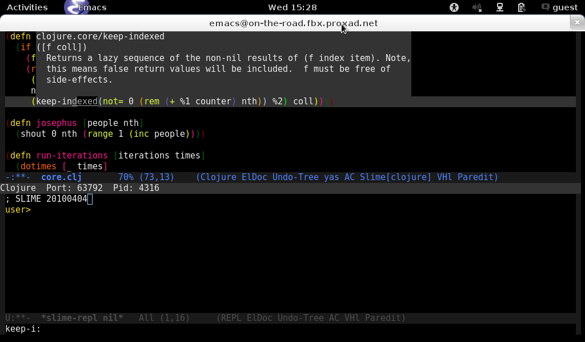
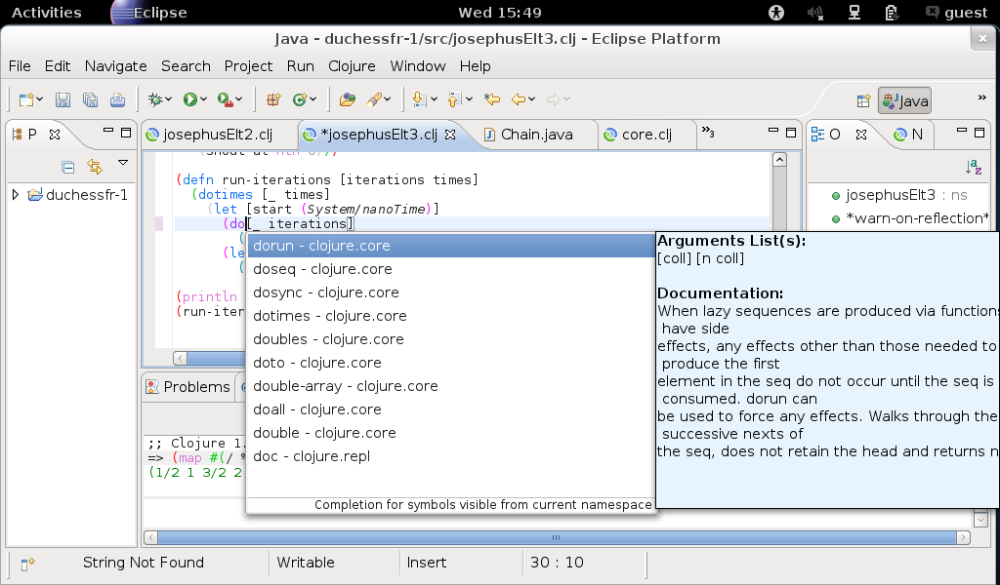
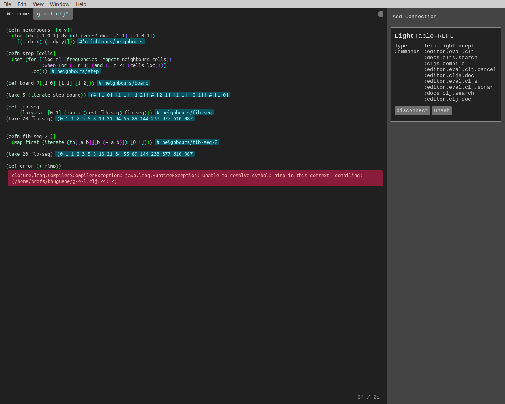

(Yet) Another language ?
thx to perfect Java interoperability !
Solves the chicken-egg problem (libraries, users base) that have been keeping us with C for decades despite all the good work in academia.
Clojure has it all, à la carte.
Toolbox > swiss army knife
"Oh, btw, it's a LISP"
Not necessarily easy at first but :



Hence you should be able to automate boring parts of programming ! To make it easy, you need the simple syntax of code as data structure. (disclosure: I'm a Boost::mpl user !) [ Macronomicon by M.Fogus]
Macros not only for syntactic sugar :
Perfect Plateform for :
Not all side effects are evil : by learning this language, you'll also learn concepts form the great minds behind it. You will also get a better understanding of concepts you already (think you) know (e.g. OOP, state, time, value, hammocks…).
"others will never resolve on passing higher order functions in
forests of parenthesis" ☹
I avoided LISP for 10 years : "I was blind, now I can see. Rich made a believer out of me !" ☺
ClojureScript compiles as efficient Javascript, with SourceMap .
cheat sheets
"code"body
"code"body
Remember : a proper IDE will help a lot you with the () !